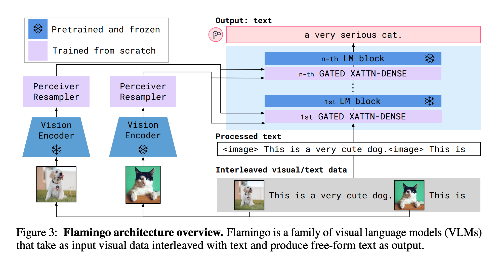
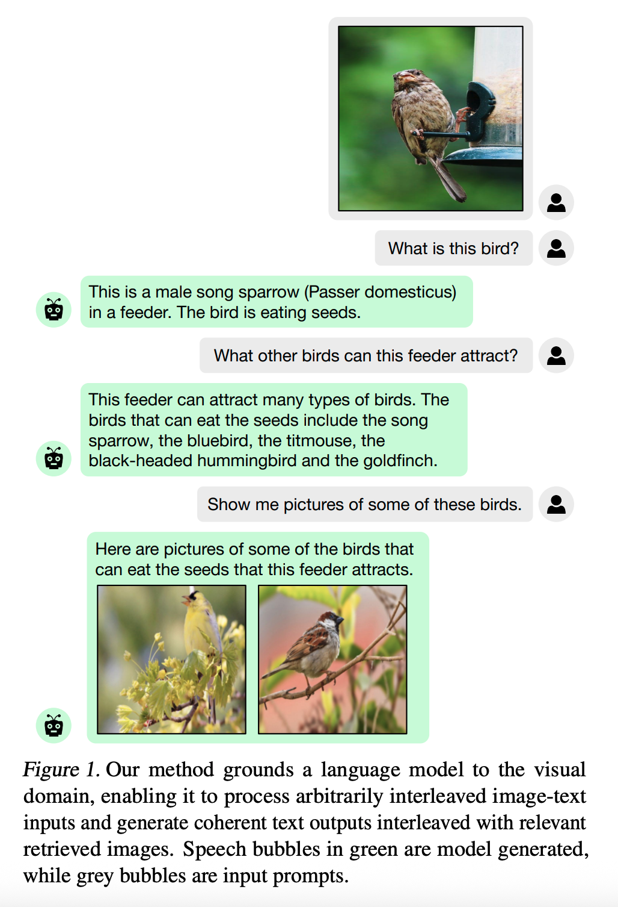
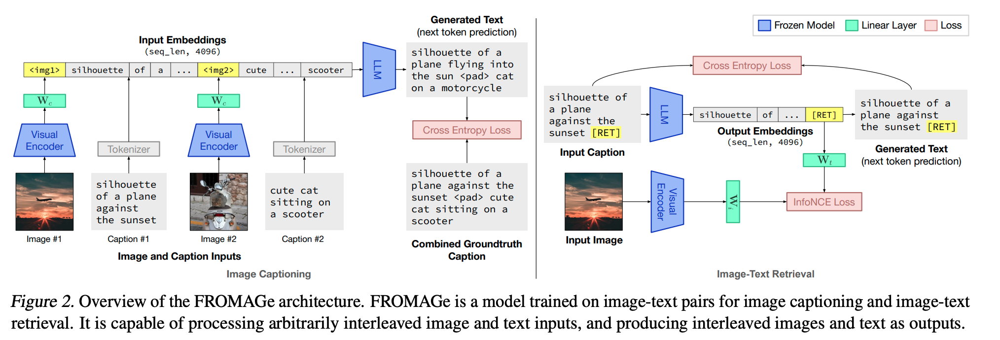
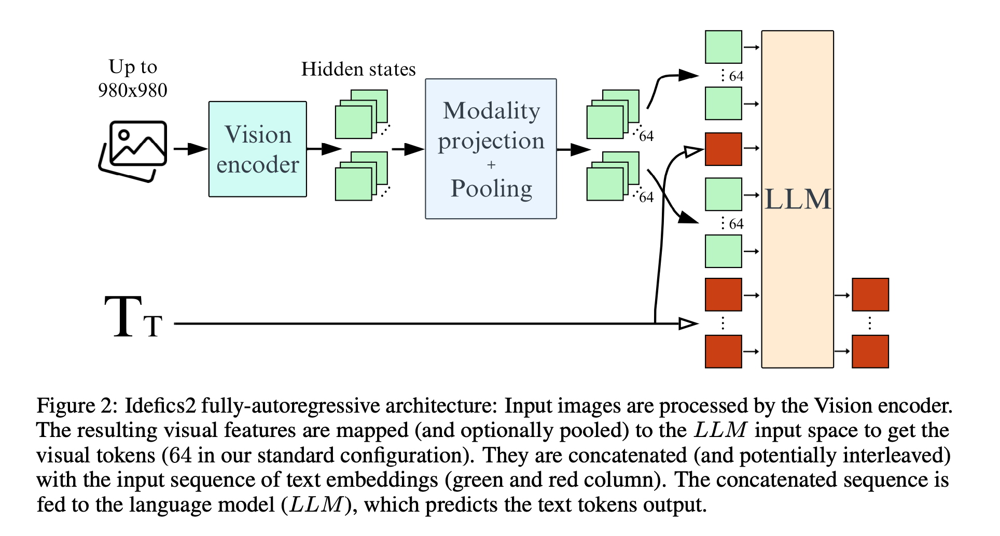

The landscape of small, efficient multimodal models has seen a rapid evolution with the introduction of SmolVLM and its successor, SmolVLM2. While both models are designed for resource-constrained environments, SmolVLM2 represents a significant advancement, primarily in its robust and dedicated video understanding capabilities, marking a shift from a primarily image-focused model to a "video-first" powerhouse in the compact AI space.
Flamingo is a multimodal model that can process both visual and textual data. It is a frozen model, which means that the model is not trained on any new data. It introduces cross-attention layers that allow the model to attend to both visual and textual information, enabling more sophisticated multimodal reasoning. The architecture also includes a perceiver resampler that helps process variable-length visual inputs efficiently.
Grounding Language Models to Images for Multimodal Inputs and Outputs
From the abstract: We propose an efficient method to ground pretrained text-only language models to the visual domain, enabling them to process arbitrarily interleaved image-and-text data, and generate text interleaved with retrieved images.
 TBD
